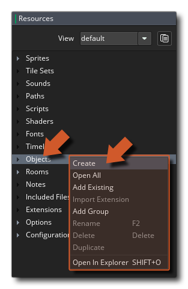
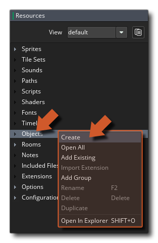
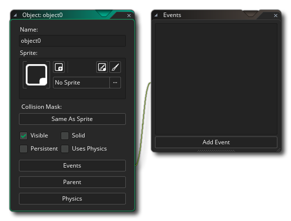
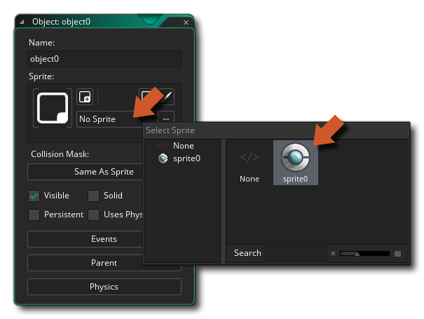

Objects will be used for almost everything in your game, from the Player, to the enemies, to the bullets and explosions, and you can define how they behave and react by giving them code. But, before creating our first object, let's quickly run over what an object is conceptually.
The idea behind an object is to create a kind of blueprint of behaviours that can then be used within a game. We think of it as a blueprint because in a game you don't actually have any objects, you have instances instead. Instances are copies of the initial object placed within the game room. So, objects are in the resource tree, and are then used to create the instances that populate our game room. This means that changing an instance's properties will not change the properties of the object it was made from, however changing an object will change all subsequent instances created from it.
We are going to go ahead and create an object now. This object will be for our player and is what will permit it to move and shoot in the game room. To create the object, right click  on the "Object" resource folder and select Create:

on the "Object" resource folder and select Create:

This will create a new, blank, object for us and open the Object Editor: 
The object editor will be opened within the same workspace as the sprite editor, and it may push the sprite editor out of the visible space. You can hold down the middle mouse button  and move the mouse to "pan" the workspace around and you can also use
and move the mouse to "pan" the workspace around and you can also use  /
/  + the mouse wheel
+ the mouse wheel  to zoom it in and out. When you have multiple resources open you can also use
to zoom it in and out. When you have multiple resources open you can also use  /
/  + to open the workspace switcher and select the editor that you want to see directly.
+ to open the workspace switcher and select the editor that you want to see directly.
Now we have our object we need to name it, so we'll follow the same convention we outlined previously and use a prefix to define what kind of resource it is and give it the unique name "obj_player" to match the sprite "spr_player" that we made previously.
We can now associate the sprite to the object by selecting it from the list of available sprites. To do this, you will need to click the button that is currently labelled "No sprite" and select the sprite "spr_player" from the list of available resources: 
Associating an object with a sprite in this way means that when you place an instance of the object in the game room, this is what will be drawn and certain attributes of the sprite will be used by the instance. Let's go ahead and place an instance in the game room now...